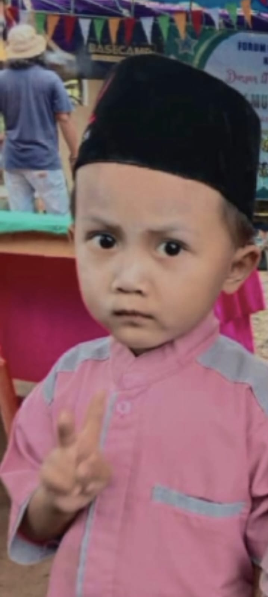

Assalamu'alaikum Warahmatullahi Wabarakatuh
Dengan memohon rahmat dan ridha Allah SWT, kami mengundang Bapak/Ibu/Saudara/i untuk hadir pada acara tasyakuran khitanan putra kami:
Arkana Syabil Mulyadi
Putra dari Bapak Edi Mulyadi & Ibu Nina Maria
سُبْحَانَ الَّذِي خَلَقَ الْأَزْوَاجَ كُلَّهَا
Detail Acara
Rabu, 03 Juni 2026
09.00 WIB - Selesai
Kediaman Bapak Edi Mulyadi
Jl. Raya Cilegon, Kec. Cinangka
Menuju Hari Bahagia
00Hari
00Jam
00Menit
00Detik
Galeri Kenangan




📍 Lokasi Acara
Terima Kasih
Kehadiran dan doa restu Bapak/Ibu merupakan kebahagiaan tersendiri bagi kami.
وَالسَّلاَمُ عَلَيْكُمْ وَرَحْمَةُ اللهِ وَبَرَكَاتُهُ
Amplop Digital
Doa restu Anda adalah kado terindah. Namun jika ingin memberikan tanda kasih:
Scan QRIS
BCA - 6510495932
a.n Ziyad Rifki Hidayatullah